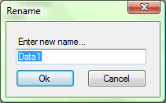

To rename Data Stream, you must first select Data Stream you want to rename.
Then select Rename Data Stream command from Toolbar. After that you will be asked to fill up new Data Stream Name.

When pressed Ok Data Stream is renamed, if Cancel is pressed, nothing happens to the selected Data Stream.